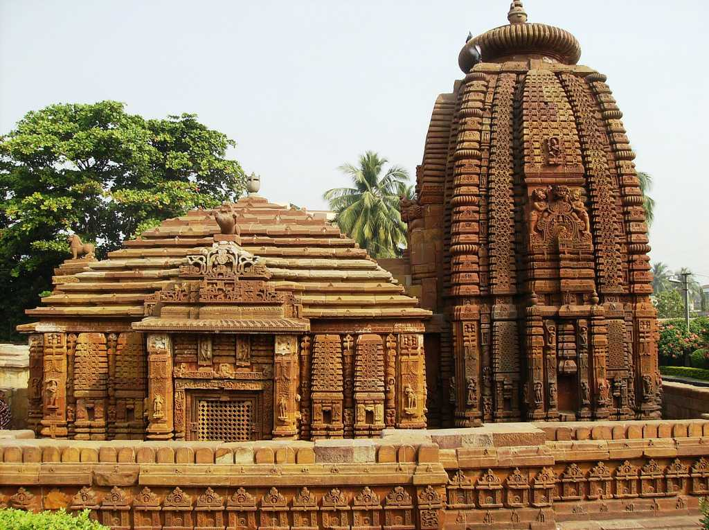
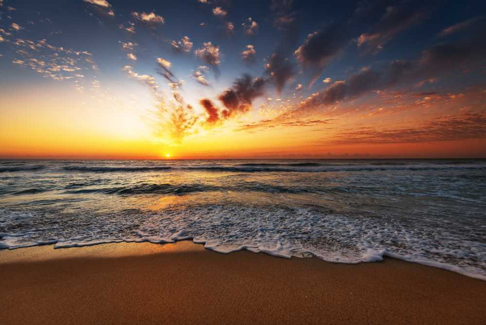

Bhubaneswar, the temple city of India, once known for its architecture and grand temples, is presently a thriving centre for commerce and business.
Konark, in the state of Orissa is renowned world over for the Sun Temple which is also a UNESCO World Heritage Site, the Annual dance festival and its beautiful sandy beaches.

'Udayagiri' means the mountain of the sunrise, and is a historical Hindu ritual site home to twenty rock-cut caves near Vidisha, Madhya Pradesh. Otherwise known as 'Vishnu Padagiri' meaning "the feet of Vishnu".
The picturesque town of Satkosia, 160 km from Bhubaneswar, boasts of a wildlife sanctuary popularly known as the Satkosia Tiger Reserve since 1976.

Located in Baleswar district of Odisha and at a distance of 10 Km from Digha, the Talasari beach is pristine, serene and has been bestowed with spectacular panorama.

Chandipur is a secluded seaside village of Baleshwar district stored safely on the coastline of Orissa. Chandipur is also locally known as Chandipur-on-sea.
Reflecting the natural beauty of an era gone by, Simlipal National Park is in a beautiful and scenic town in Odisha. Situated in Mayurbhanj, it once used to be a hunting ground for the rulers of the province.
Located in the sacred town of Puri, the Jagannath Temple or the pride of India was built in the 11th century by King Indradyumna.

Raghurajpur, a heritage crafts village in Odisha, India, is renowned for its traditional art forms, particularly Pattachitra (scroll painting), palm leaf engraving, and mask-making.
Odisha Outings — Fall….Fall for Waterfalls! | by Rohini S ...Rani Duduma Waterfalls, located near Nandapur in the Koraput district of Odisha, India, is a stunning natural attraction known for its scenic beauty and clear, cool water.
Mandasaru, also known as the "Silent Valley of Odisha," is a gorge ecosystem in the eastern part of Kandhamal District, Odisha, India, characterized by dense forests, frequent weather changes, and rich biodiversity, and is home to the Mandasaru Valley Nature Camp.

The Vaishno Devi Temple, a prominent Hindu pilgrimage site, is located in the Trikuta Hills near Katra, Jammu & Kashmir, and is dedicated to the goddess Vaishno Devi, considered a Shakti Peetha.